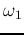
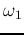

The bel (B) is a unit of measurement for the ratio of a physical quantity (power, intensity, magnitude, etc.) and a specified or implied reference level in base-10 logarithm. As it is a ratio of two quantities with the same unit, it is dimensionless.
For example, consider a power amplifier with input signal power
and output signal power , then the power gain of the amplifier is
, which can be more concisely expressed in base-10 log scale:
As bel (B) is often too big a unit (a gain of 100 is only 2 B), a smaller
unit of decibel (dB), 1/10 of the unit bel (B), is more widely used instead.
Now the power gain above can be expressed as:
As another example, the sound level is measured in decibel, in terms of the ratio
of the sound intensity (power per area, e.g.,  ) and the threshold of human
hearing (
) as the reference. The human hearing has a large range
from 0 dB (threshold) to 140 dB (military jet takeoff, times the threshold,
i.e., ). 160 dB sound level will cause instant membrane/eardrum
perforation.
) and the threshold of human
hearing (
) as the reference. The human hearing has a large range
from 0 dB (threshold) to 140 dB (military jet takeoff, times the threshold,
i.e., ). 160 dB sound level will cause instant membrane/eardrum
perforation.
In general, power (and energy) is always proportional to the amplitude of certain
quantity squared (e.g., , , ). Therefore a
different definition is used for ratios between two amplitudes, for example, the
output and input voltages  and of a voltage amplifier, we have:
and of a voltage amplifier, we have:
Given the input voltage and the voltage gain in decibel, e.g., ,
the output voltage can be obtained as:
A related issue is the half power point. Recall that for a second order system, when
is small (e.g., ), the magnitude  of the frequency
response function has a peak at
. The bandwidth of
the peak is defined as the difference between two cut-off frequencies 
and
of the frequency
response function has a peak at
. The bandwidth of
the peak is defined as the difference between two cut-off frequencies 
and  (
) at which
(
) at which